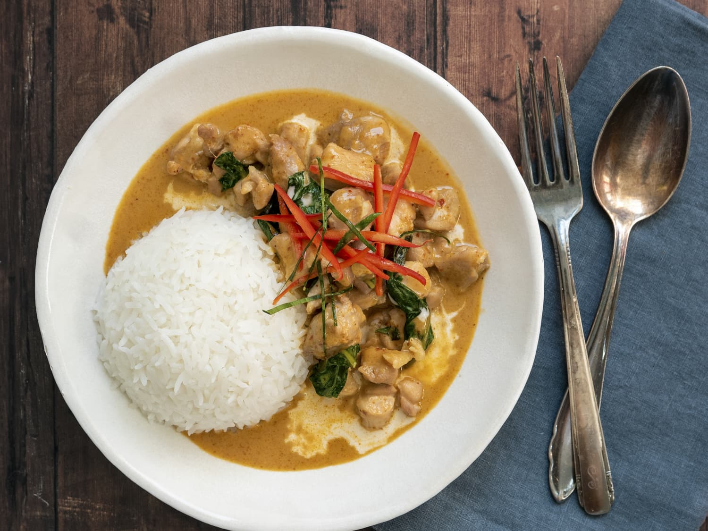

Panang Curry

Description
Panang curry pastes vary somewhat from recipe to recipe, but they typically include dried chili peppers, galangal, ginger, lemongrass, kaffir lime zest, kaffir lime leaves, coriander root, coriander seeds, and cumin seeds.
Ingredients
- 1 1/2 pounds boneless skinless chicken thighs chopped
- 1 small onion, peeled and chopped
- 1 red bell pepper, seeded and chopped
- 1 orange bell pepper, seeded and chopped
- 2 cloves garlic, minced
- 1 tablespoon coconut oil
- 4 ounces Panang red curry paste (1 can)
- 1 tablespoon peanut butter
- 12 kaffir lime leaves, crushed
- 12 kaffir lime leaves, crushed
- 12 kaffir lime leaves, crushed
- 13.5 ounces thick coconut milk, unsweetened (1 can)
- 3 tablespoons fish sauce
- 1/4 cup Thai basil leaves or sweet basil
Steps
- Cut the chicken into bite-size pieces. Chop the onions and peppers into rough 1-inch pieces. Mince the garlic. Then crush the kaffir lime leaves to help release their oils.
- Place a 14-inch skillet (or wok) over medium-high heat. Add the coconut oil. Once the oil melts, add the onions. Sauté for 1 minute, then add the peppers and garlic. Sauté another 2-3 minutes.
- Move the veggies to the sides of the skillet and add the panang red curry paste and peanut butter to the center of the pan. Sauté the curry for 2-3 minutes to intensify the flavor, moving around the pan. Then add the kaffir lime leaves, coconut milk, and fish sauce. Stir to blend.
- Stir in the chopped chicken and bring to a boil. Lower the heat and simmer for 10-15 minutes, until the chicken is cooked through and the sauce thickens. Stir occasionally. Remove from heat and stir in the basil leaves. Serve with rice, quinoa, or noodles.